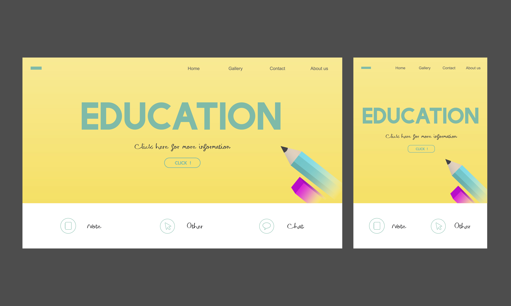
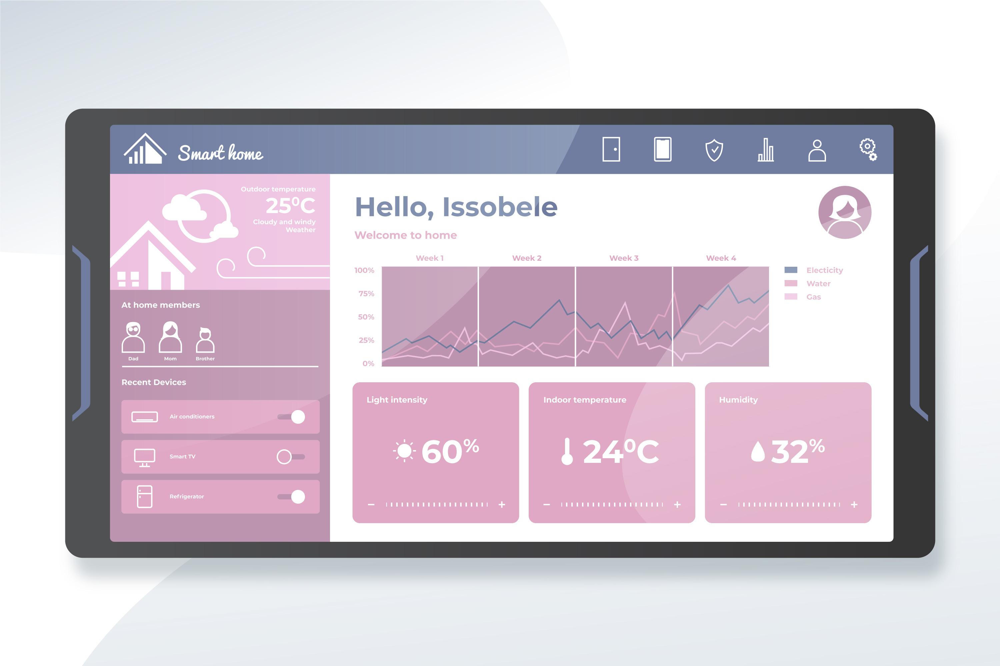

Ejemplos de proyectos realizados como prácticas de maquetación web.
Web Informativa de Centro Educativo
Página web estática diseñada para presentar la información básica de un centro educativo,
incluyendo secciones como inicio, oferta formativa y contacto. El proyecto se centra en
la correcta estructuración del contenido usando HTML5 y una maquetación sencilla con CSS.

Panel Informativo Web
Diseño de un panel informativo pensado para mostrar avisos, noticias o información relevante
sobre el tiempo metereologico.
El objetivo del proyecto es practicar la disposición de elementos
y el uso de etiquetas semánticas en HTML.
